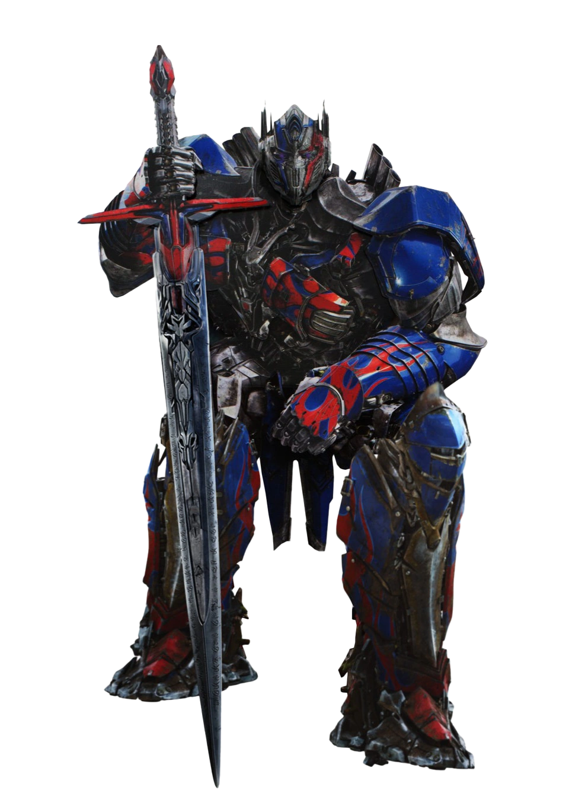

Transformers is a media franchise produced by American toy company Hasbro and Japanese toy company Takara Tomy. It primarily follows the heroic Autobots and the villainous Decepticons, two alien robot factions at war that can transform into other forms, such as vehicles and animals. The franchise encompasses toys, animation, comic books, video games and films. As of 2011, it generated more than ¥2 trillion ($25 billion) in revenue,[1] making it one of the highest-grossing media franchises of all time
The franchise began in 1984 with the Transformers toy line, comprising transforming mecha toys from Takara's Diaclone and Micro Change toylines rebranded for Western markets.[2] The term "Generation 1" (G1) covers both the animated television series The Transformers and the comic book series of the same name, which are further divided into Japanese, British and Canadian spin-offs. Sequels followed, such as the Generation 2 comic book and Beast Wars TV series, which became its own mini-universe.